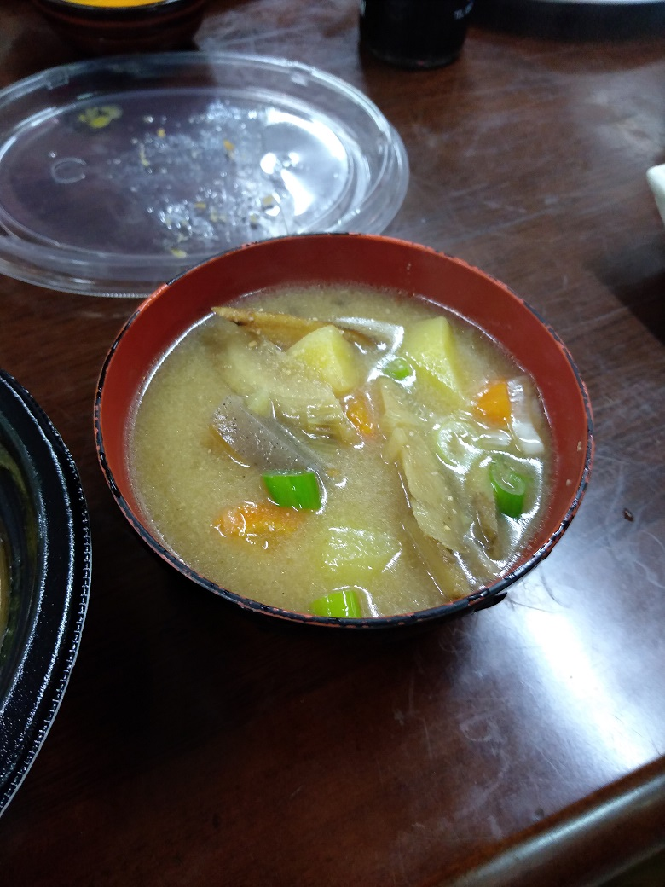
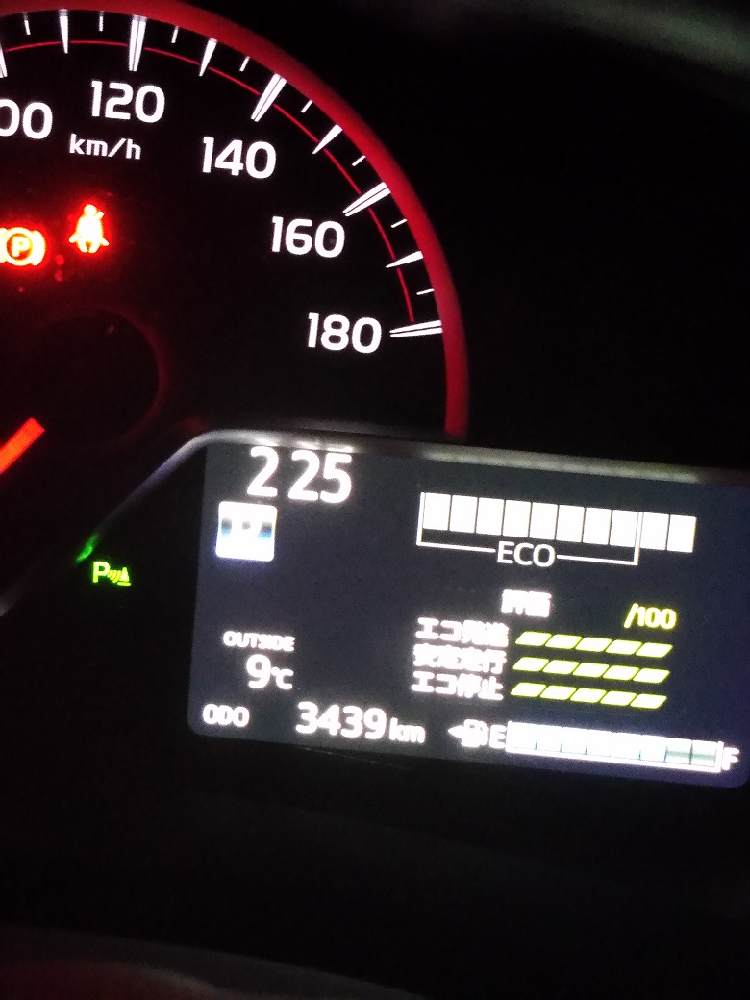
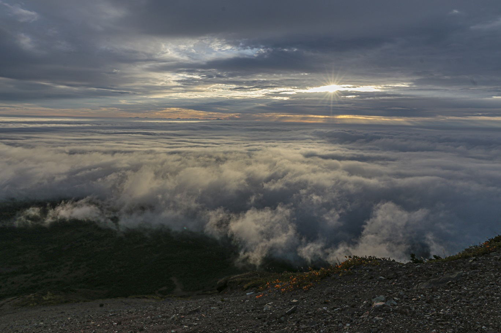
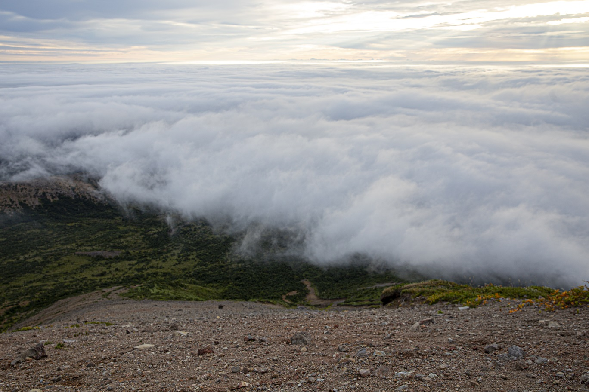
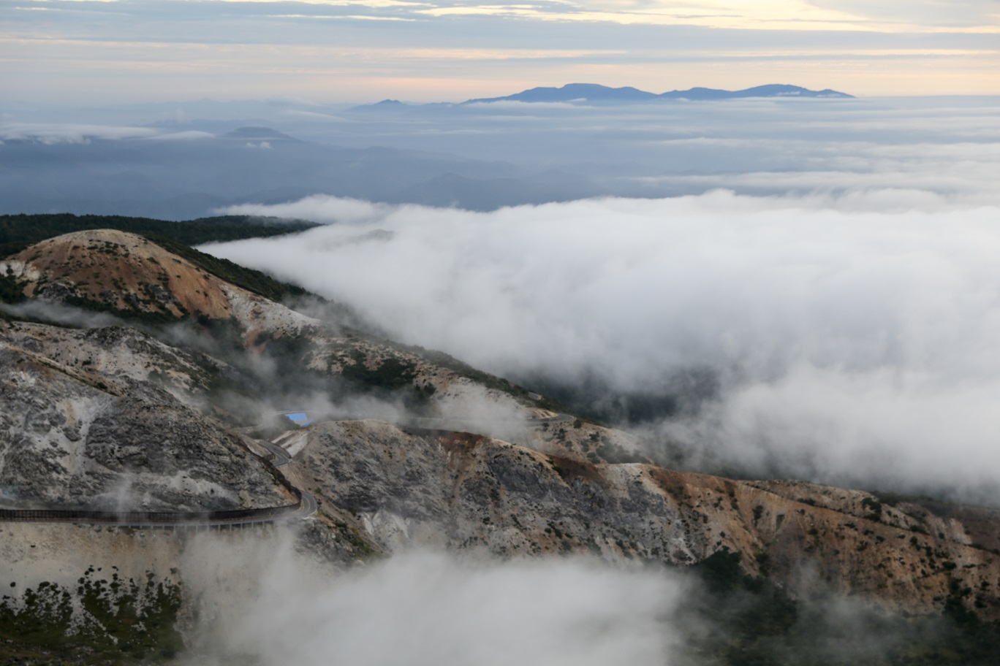
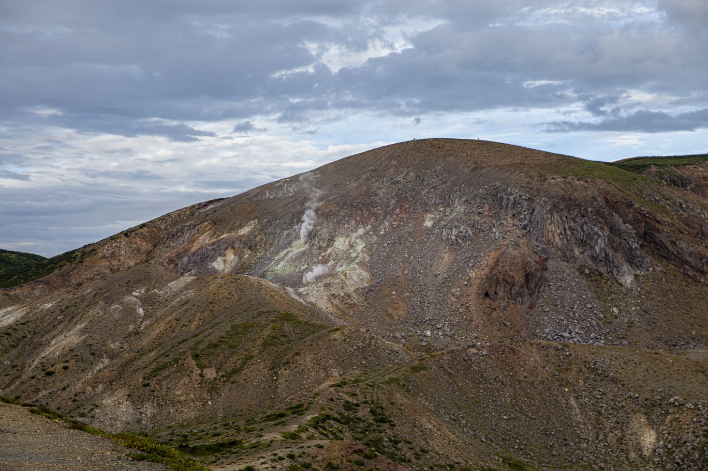
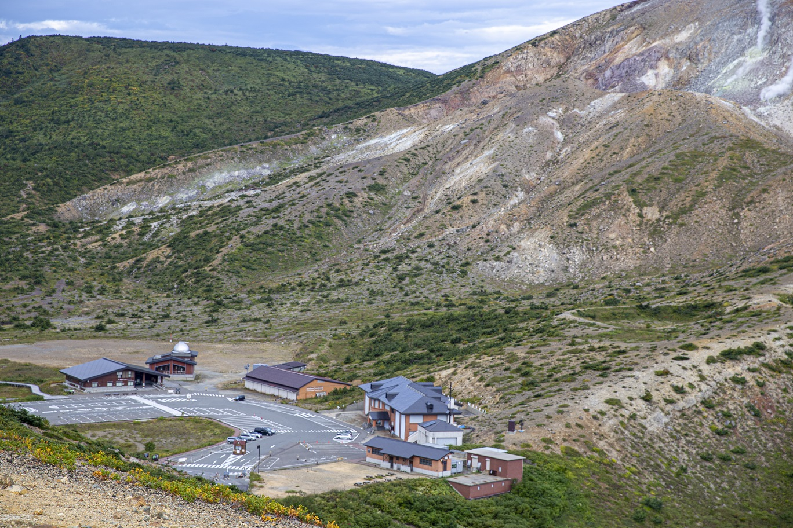

<!DOCTYPE html>
<html>

<head><meta name="generator" content="Hexo 3.8.0">
  <meta charset="utf-8">
  
  <title>【遠征記】2019年9月 浄土平 | ほしよみ大学生のブログ</title>
  <meta name="viewport" content="width=device-width">
  <meta name="description" content="あいさつこんにちは．前回の記事でSIGMA社の1Dayインターンへ行った話を書きましたが，今回はその後，浄土平まで羽根を伸ばしてみた話を書きます．">
<meta name="keywords" content="写真,遠征記">
<meta property="og:type" content="article">
<meta property="og:title" content="【遠征記】2019年9月 浄土平">
<meta property="og:url" content="http://dabokun.github.io/2019/10/07/00000022-2019-09-jodo/index.html">
<meta property="og:site_name" content="ほしよみ大学生のブログ">
<meta property="og:description" content="あいさつこんにちは．前回の記事でSIGMA社の1Dayインターンへ行った話を書きましたが，今回はその後，浄土平まで羽根を伸ばしてみた話を書きます．">
<meta property="og:locale" content="ja">
<meta property="og:image" content="http://dabokun.github.io/2019/10/07/00000022-2019-09-jodo/card.jpg">
<meta property="og:updated_time" content="2019-10-07T16:21:13.962Z">
<meta name="twitter:card" content="summary">
<meta name="twitter:title" content="【遠征記】2019年9月 浄土平">
<meta name="twitter:description" content="あいさつこんにちは．前回の記事でSIGMA社の1Dayインターンへ行った話を書きましたが，今回はその後，浄土平まで羽根を伸ばしてみた話を書きます．">
<meta name="twitter:image" content="http://dabokun.github.io/2019/10/07/00000022-2019-09-jodo/card.jpg">
<meta name="twitter:creator" content="@dabo_pic">
  
  <link rel="alternative" href="/atom.xml" title="ほしよみ大学生のブログ" type="application/atom+xml">
  
  
  <link rel="icon" href="/images/favicon.png">
  
  <link rel="stylesheet" href="/css/style.css">
  <!--[if lt IE 9]><script src="//html5shiv.googlecode.com/svn/trunk/html5.js"></script><![endif]-->
  
</head></html>
<body>
  <div id="container">
    <div class="mobile-nav-panel">
	<i class="icon-reorder icon-large"></i>
</div>
<header id="header">
	<h1 class="blog-title">
		<a href="/">ほしよみ大学生のブログ</a>
	</h1>
	<nav class="nav">
		<ul>
			<li><a href="/">Home</a></li><li><a href="/categories">Categories</a></li><li><a href="/tags">Tags</a></li><li><a href="/archives">Archives</a></li><li><a href="/about">About</a></li><li><a href="/work">Work</a></li>
			<li><a id="nav-search-btn" class="nav-icon" title="Search"></a></li>
			<li><a href="https://github.com/dabokun"></a>
			</li>
			<li><a href="https://twitter.com/dabo_pic"></a></li>
			<li><a href="/atom.xml" id="nav-rss-link" class="nav-icon" title="RSS Feed"></a>
			</li>
		</ul>
	</nav>
	<div id="search-form-wrap">
		<form action="//google.com/search" method="get" accept-charset="UTF-8" class="search-form"><input type="search" name="q" class="search-form-input" placeholder="Search"><button type="submit" class="search-form-submit">&#xF002;</button><input type="hidden" name="sitesearch" value="http://dabokun.github.io"></form>
	</div>
</header>
    <div id="main">
      <article id="post-00000022-2019-09-jodo" class="post">
	<footer class="entry-meta-header">
		<span class="meta-elements date">
			<a href="/2019/10/07/00000022-2019-09-jodo/" class="article-date">
  <time datetime="2019-10-07T01:24:18.000Z" itemprop="datePublished">2019-10-07</time>
</a>
		</span>
		<span class="meta-elements author">astr0dab0</span>
		<div class="commentscount">
			
			<a href="http://dabokun.github.io/2019/10/07/00000022-2019-09-jodo/#disqus_thread" class="article-comment-link">Comments</a>
			
		</div>
	</footer>
	
	<header class="entry-header">
		
  
    <h1 class="article-title entry-title" itemprop="name">
      【遠征記】2019年9月 浄土平
    </h1>
  

	</header>
	<div class="entry-content">
		
		
		<div id="toc" class="toc-article">
			<p class="toc-title">目次</p>
			<ol class="toc"><li class="toc-item toc-level-3"><a class="toc-link" href="#あいさつ"><span class="toc-number">1.</span> <span class="toc-text">あいさつ</span></a></li><li class="toc-item toc-level-3"><a class="toc-link" href="#浄土平へ"><span class="toc-number">2.</span> <span class="toc-text">浄土平へ</span></a></li><li class="toc-item toc-level-3"><a class="toc-link" href="#ご来光と雲海"><span class="toc-number">3.</span> <span class="toc-text">ご来光と雲海</span></a></li></ol>
		</div>
		
		<h3 id="あいさつ"><a href="#あいさつ" class="headerlink" title="あいさつ"></a>あいさつ</h3><p>こんにちは．<br><a href="/2019/09/30/00000021-sigma-intern/">前回の記事</a>でSIGMA社の1Dayインターンへ行った話を書きましたが，今回はその後，浄土平まで羽根を伸ばしてみた話を書きます．</p>
<a id="more"></a>
<h3 id="浄土平へ"><a href="#浄土平へ" class="headerlink" title="浄土平へ"></a>浄土平へ</h3><p>インターンついでに普段は関東から遠くてなかなか行こうと思えない浄土平へ行けるな…と計画を練っていた頃，ちょうどインターンの日に学部時代サークルで夏に毎年宿泊していた宿に，サークル同期や先輩が泊まっていることが判明していたので，浄土平へまっすぐは向かわず，まずはその宿に行きました．車は会津若松まで行って借りました．宿に到着するとちょうど夕飯の時間だったので，自分もコンビニ買った夕飯を皆と食べていると，不意に豚汁を振る舞われました．ありがたすぎる．<br><br>宿でしばらく同期や先輩とナポレオン(トランプゲーム)をして，9:30頃に浄土平へ一人で出発．もともと天気は良くなかったのであまり期待はしていませんでしたが，とりあえず行くだけ行ってみることが目標です．夜に交通規制がしかれていない南側の道から行ったのですが，道は関東圏の観望地と比べて割と狭い場所が多いなあという印象でした．道中動物に会うかなとも思いましたが，裏磐梯で子狸のような生き物がいた以外には特に会いませんでした．もっと強そうな鹿とか出てくると思っていたのでちょっと残念(？)．<br>浄土平が近づいてくるとうっすらと硫化水素のにおいがして，ここがつい最近噴火警戒レベルが1に引き下げられたにすぎない地であることを思い出させます．<br>到着してみると，人っ子一人おらず．天気はほとんど曇りで低空に明るい星が1つか2つ見える程度．熊が出るかもしれないと聞いていたので少し心細かったですが，ラジオをかけながらトイレに行き，タイムラプスをしかけ，車で寝ました．朝までに何度か目を覚まして外を見ましたが晴れてる様子は全く無かったので，結局そのまま寝て過ごしたことになります笑．ちょくちょく寒いなと思ったので気温を見てみると外気温は9℃．さすがは東北の標高1600mといったところでしょうか．暖房をかけていないとジワリジワリと寒さが体を蝕みます．<br></p>
<h3 id="ご来光と雲海"><a href="#ご来光と雲海" class="headerlink" title="ご来光と雲海"></a>ご来光と雲海</h3><p>ちょうど薄明が始まったころに再び目を覚ましました．すると来た時は誰もいなかった浄土平に結構な数の車がいます．夜の間も何度か人が出入りしていたのですが，その時より明らかに数が多いです．もしかしてご来光目当て？と思ってトイレまで行くついでに東側を眺めてみると，なんととてつもない雲海が広がっているではありませんか！<br>インターンまでの疲れも出ていたので少し迷いましたが，せっかくだからということでカメラを回収し，駐車場前にそびえる吾妻小富士に登ってご来光を眺めることにしました．この時2つミスを犯しました．まず，タイムラプスで消耗しきっているカメラのバッテリー交換を忘れました．雲海の写真は撮れましたが，ずっとバッテリー切れにヒヤヒヤしながらの登山でした．もう1つは，タイムラプス用のjpeg設定をRawに変え忘れていたことです．両方あるあるなので反省．道中はラジオをかけて，ゆっくり登っていきました．<br>吾妻小富士頂上まで30分ほどで登頂．着いてみると本当に美しい雲海が．自分のいる小富士のちょうど足元から雲が北と東に広がっていて，海にぽっかり浮かんでいる島にいる気分でした．雲間からご来光も見ることができたので，何枚か撮影して下山しました．自分はロクな登山装備ではなかったので，下山中に細かい石ばかりのところで滑って尻もちをつきました．小さい山ですが，頂上手前の傾斜がキツくあまりナメてはいけないなと思いました．<br>以下，小富士から撮影した写真です↓．</p>
<p>ご来光と雲海．本当に神々しかった．<br></p>
<p>天使の梯子．光のあたっているところの雲まで行ってみたいものですね．<br></p>
<p>足元の雲海．距離感が難しいですが下まで高低差100mくらいあると思います．<br></p>
<p>浄土平から北側へ伸びる道．遠くには蔵王の山々が．<br></p>
<p>一切経山からの噴気．夜中からずっとボワァーという音がするので気になっていましたがこの音でした．<br></p>
<p>小富士から駐車場，天文台を臨む．ありがとうございました．<br></p>
<p>それからは朝にもう一度宿に戻って挨拶をし，朝ごはんを食べて(なぜか僕の分が用意されていたのでいただいてしまった，至れり尽くせり…)会津若松まで戻りました．<br>車を返すまでの間このあたりに住んでいる坂本真綾ファンのフォロワーさんに会って話をしたり，富士の湯という会津若松駅前のスパでサ活をしたり，少し走ったところにある牛乳屋食堂さんでお昼を食べたりしました．基本一人旅でしたが，多くの人に会えて楽しい旅になりました．<br>会津は関東からは遠いですが，今回行けなかったところを含めまた来たいと思います．何より星空を拝めなかったので次回はちゃんと晴れを狙って行こうと思います．それでは！</p>
<p>最後にどん曇りタイムラプスを置いておきますｗ<br></p>

		
	</div>
	<footer class="article-footer">
		<a href="https://twitter.com/intent/tweet?text=%E3%80%90%E9%81%A0%E5%BE%81%E8%A8%98%E3%80%912019%E5%B9%B49%E6%9C%88%20%E6%B5%84%E5%9C%9F%E5%B9%B3｜%E3%81%BB%E3%81%97%E3%82%88%E3%81%BF%E5%A4%A7%E5%AD%A6%E7%94%9F%E3%81%AE%E3%83%96%E3%83%AD%E3%82%B0&url=http://dabokun.github.io/2019/10/07/00000022-2019-09-jodo/" class="twitter-share-button" target="_blank" title="Twitter"></a>
		<script async src="https://platform.twitter.com/widgets.js" charset="utf-8"></script>

		<div id="fb-root"></div>
		<script async defer crossorigin="anonymous" src="https://connect.facebook.net/ja_JP/sdk.js#xfbml=1&version=v4.0"></script>
		<div class="fb-share-button" data-href="http://dabokun.github.io/2019/10/07/00000022-2019-09-jodo/" data-layout="button_count" data-size="small"><a target="_blank" href="https://www.facebook.com/sharer/sharer.php?u=https%3A%2F%2Fdabokun.github.io%2F&amp;src=sdkpreparse" class="fb-xfbml-parse-ignore">シェア</a></div>
	</footer>
	<footer class="entry-footer">
		<div class="entry-meta-footer">
			<span class="category">
				
  <div class="article-category">
    <a class="article-category-link" href="/categories/expedition/">遠征記</a>
  </div>

			</span>
			<span class=" tags">
				
  <ul class="article-tag-list"><li class="article-tag-list-item"><a class="article-tag-list-link" href="/tags/photography/">写真</a></li><li class="article-tag-list-item"><a class="article-tag-list-link" href="/tags/expedition/">遠征記</a></li></ul>

			</span>
		</div>
	</footer>
	
	
<nav id="article-nav">
  
    <a href="/2019/10/25/00000023-orion-work/" id="article-nav-newer" class="article-nav-link-wrap">
      <strong class="article-nav-caption">Newer</strong>
      <div class="article-nav-title">
        
          オリオン座三ツ星付近
        
      </div>
    </a>
  
  
    <a href="/2019/09/30/00000021-sigma-intern/" id="article-nav-older" class="article-nav-link-wrap">
      <strong class="article-nav-caption">Older</strong>
      <div class="article-nav-title">
        
          SIGMAの1Dayインターンに行ってきました
        
      </div>
    </a>
  
</nav>

	
</article>


<section id="comments">
	<div id="disqus_thread">
		<noscript>Please enable JavaScript to view the <a href="//disqus.com/?ref_noscript">comments powered by
				Disqus.</a></noscript>
	</div>
</section>

    </div>
    <div class="mb-search">
  <form action="//google.com/search" method="get" accept-charset="utf-8">
    <input type="search" name="q" results="0" placeholder="Search">
    <input type="hidden" name="q" value="site:dabokun.github.io">
  </form>
</div>
<footer id="footer">
	<h1 class="footer-blog-title">
		<a href="/">ほしよみ大学生のブログ</a>
	</h1>
	<span class="copyright">
		&copy; 2019 astr0dab0<br>
		Modify from <a href="http://sanographix.github.io/tumblr/apollo/" target="_blank">Apollo</a> theme, designed by <a href="http://www.sanographix.net/" target="_blank">SANOGRAPHIX.NET</a><br>
		Powered by <a href="http://hexo.io/" target="_blank">Hexo</a>
	</span>
</footer>
    
<script>
  var disqus_shortname = 'astr0dab0';
  
  var disqus_url = 'http://dabokun.github.io/2019/10/07/00000022-2019-09-jodo/';
  
  (function(){
    var dsq = document.createElement('script');
    dsq.type = 'text/javascript';
    dsq.async = true;
    dsq.src = '//go.disqus.com/embed.js';
    (document.getElementsByTagName('head')[0] || document.getElementsByTagName('body')[0]).appendChild(dsq);
  })();
</script>


<script src="//ajax.googleapis.com/ajax/libs/jquery/2.0.3/jquery.min.js"></script>


<link rel="stylesheet" href="/fancybox/jquery.fancybox.css" media="screen" type="text/css">
<script src="/fancybox/jquery.fancybox.pack.js"></script>


<script src="/js/script.js"></script>
  </div>
</body>
</html>